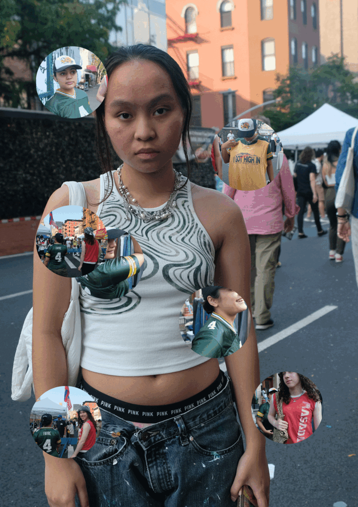
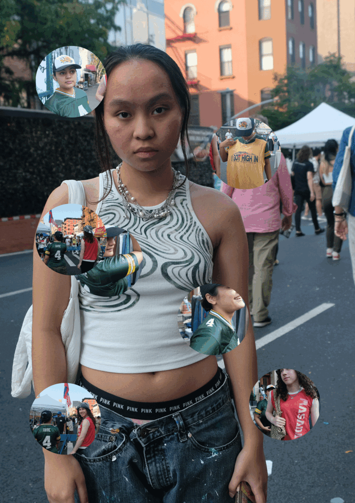

1. Describe your previous experience with coding
1. What classes have you taken where you were exposed to HTML/CSS/JS?
I've only been exposed to HTML/CSS/JS in my core interaction class last semester.
2. What parts of the class resonated with you?
I enjoyed having the creative freedom to code my own website, and design it however I liked.
3. Which parts were the most confusing?
Javascript, we barely learnt it as the Strike started as we were being introduced to Js.
2. How are you feeling about learning to code in this class? Nervous? Excited?
I'm excited and want to catch up on everything I couldn't learn last semester.
3. How do you imagine coding fitting in with the rest of your design curriculum and career after college?
I hope to be a UI/UX designer, and I know that coding will be handy.
4. Describe the relationship between HTML, CSS, and Javascript. Which one(s) are required to create a webpage?
A webpage can be made with just HTML, but CSS allows one to design it, while Js makes it more interactive.
Describe what GitHub does
Github acts as a server platform, so that files on our computer can be uploaded to the web and made into a public domain.
Using each HTML heading tag (
→
), list your favorite foods in order of preference.
Chicken Biryani
Anything my mom makes
Sushi
Ravioli
Dark Chocolate covered Almonds
Dumplings
https://www.itsnicethat.com/
I love seeing other creative work, it helps me keep up with trends and find out about new inspiring art.
https://godly.website/
This website always inspires me, especially as someone who wants to be a UX designer. It also tells me what's trending in the digital world, and acts as a level of standard I should aspire for.
https://www.pinterest.com/
The best way to overcome an artblock, and find the best references.
As I move the slider on the gradient, changing the color, the values in only the second rgba change, as the gradient is perhaps the same but the position is just changed?
I'd like to incorporate more color. I wish I knew how to change the size of my image,and to make it change as I expand or shrink the tab
 
